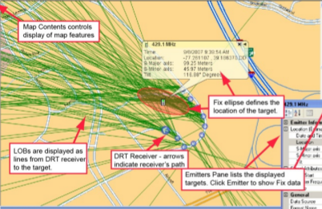
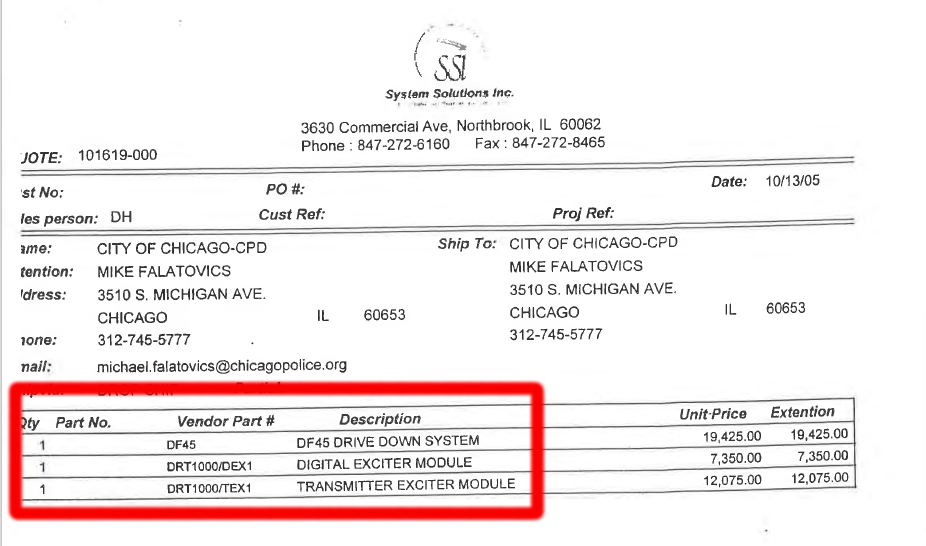
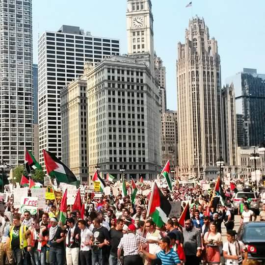
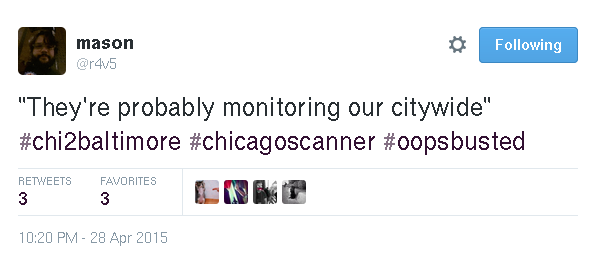
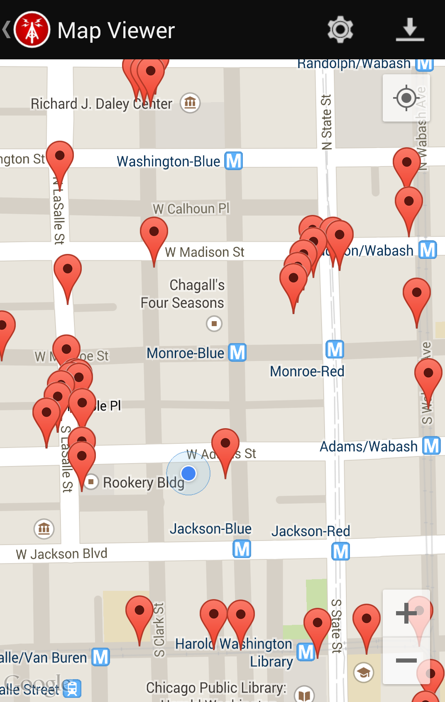

Freddy Martinez
freddymartinez9 AT gmail DOT com
4554 DB89 B856 F6E7 487D 59BF F319 5C29 2A82 2EF5
Twitter: @B_meson
IMSI Catchers
Detecting cell phone surveillance
at political protests
whois B_meson
Physicist
Linux System Administrator
“A skinny fidgety 27-year old”
Activist in various horizontally-
organized leftist organizations
Stories published in Al Jazeera,
WGN, CBS, Motherboard...
Linux System Administrator
“A skinny fidgety 27-year old”
Activist in various horizontally-
organized leftist organizations
Stories published in Al Jazeera,
WGN, CBS, Motherboard...
Scale of Problem
Tower Dumps (Kiev)
Free Trade Area of the Americas
(USA) 2003
Reported IMSI catchers in
Dresden and Leipzig (Germany)
http://t.co/fjRu1HxtyB
Free Trade Area of the Americas
(USA) 2003
Reported IMSI catchers in
Dresden and Leipzig (Germany)
http://t.co/fjRu1HxtyB

“Dear subscriber, you are registered
as a participant in a mass disturbance.”
Photo (E. Kramer / NYT)
as a participant in a mass disturbance.”
Photo (E. Kramer / NYT)
IMSI Catcher
Capabilities
Capture text messages content
Capture voice content
Gather IMSIs (phone numbers)
Real-time location tracking
DNRs
Send messages on behalf of users
Last Year in Review
Baseband reverse engineering
Filed a bunch of FOIA lawsuits
before visiting DEF CON 22
Idea of using SDR / laptops to sniff
ARFCNs (transmission Channels),
LAC (location area code), Cell IDs
Visit Wireless Village, Packet Capture
New This Year:
DRTBox

"The DRT1000 system may be used to: identify and collect
audio, data and Signal Related Information (SRI)”
NSA – BOUNDLESSINFORMANT
“CIA Aided Program to Spy on U.S. Cellphones” – WSJ
"The U.S. Marshals Service program, which became fully
functional around 2007, operates Cessna aircraft from at
least five metropolitan-area airports, with a flying range
covering most of the U.S. population, according to people
familiar with the program." – WSJ
See reporting by @AliWinston
audio, data and Signal Related Information (SRI)”
NSA – BOUNDLESSINFORMANT
“CIA Aided Program to Spy on U.S. Cellphones” – WSJ
"The U.S. Marshals Service program, which became fully
functional around 2007, operates Cessna aircraft from at
least five metropolitan-area airports, with a flying range
covering most of the U.S. population, according to people
familiar with the program." – WSJ
See reporting by @AliWinston

Requirements
Counter-surveillance should be cheap
Counter-surveillance should be cheap
Commercial / off-the-shelf hardware
Commercial / off-the-shelf hardware
Requirements
Requirements
Counter-surveillance should be cheap
Commercial / off-the-shelf hardware
Low barriers to entry
Commercial / off-the-shelf hardware
Low barriers to entry
Countersurveillance
Never let your adversary know you've
detected their surveillance
Know your operating environment
Setup early and surveil baselines
Map everything, take notes
Evasion
WiFi only device
with chat client &
anonymous file
upload and download
piratebox.cc
@pirateboxcamp
Cost ~30USD
PirateBox


Signal / TextSecure
Getting updates from remote location
Will only evade SMS intercept not IMSI catchers
Will only evade SMS intercept not IMSI catchers
iPod Touch with Signal and connect to
trusted APs only (high security)
Moto E with components ripped out.
FireChat - Mesh Networking
Other Techniques
Detection
Three separate reports
of broadcasts
appearing after police
cars showed up
Feb 2014
April 2015
of broadcasts
appearing after police
cars showed up
Feb 2014
April 2015

Detection
Rooted Moto E with prepaid SIM card
and SnoopSnitch installed
Establish a neutral third party that
isn't active in your protest to
run your detection tools
We've trained various activists
around the country with these tools
Hardware Detection
FONA (GSM microcontroller)
pySerial in python
Rasberry Pi
Direct access to AT commands
Go out into your communities and teach the risks to activists
Find trustworthy groups and give them rooted Moto E's
Cell phone surveillance is only increasing
Cheaper 4G / LTE chips with baseband access
Future Work
[0] Snoop Snitch. SRLabs 2014
https:// opensource. srlabs .de/projects/ snoopsnitch
[1] AIMSICD https://github.com/SecUpwN/Android-IMSI-Catcher-Detector
[2] “Mobile Self-Defense”. #31c3 Karsten Nohl
https:// opensource. srlabs .de/projects/ snoopsnitch
[1] AIMSICD https://github.com/SecUpwN/Android-IMSI-Catcher-Detector
[2] “Mobile Self-Defense”. #31c3 Karsten Nohl
[3] “IMSI Catcher” Daehyun Strobel. Jul 2007 Ruhr-Universität Bochum
[4] “IMSI-Catcher and Man-in-the-Middle attacks” Dammann. 2011
[5] OsmocomBB http:// bb.oscom.org/trac
[6] “Stingray Talk” AACJ Winter Seminar. Daniel Rigmaiden
[7] ““Defending against Stingrays and other cellular attacks at protests”
https://yawnbox.com/?p=2580 2015. Christopher Sheats
[8] Ukraine’s Opposition Says Government Stirs Violence NYT 2015
http://thelede.blogs.nytimes.com//2014/01/22/
ominous-text-message-sent-to-protesters-in-kiev-
sends-chills-around-the-internet/
References
Chicago Cypherpunks Club
SSHc: Southside Hackerspace Chicago
Cryptovillage Organizers
Matt Topic (Loevy & Loevy)
Drew Fustini
Jen Helsby
Brian Kroll
Thanks